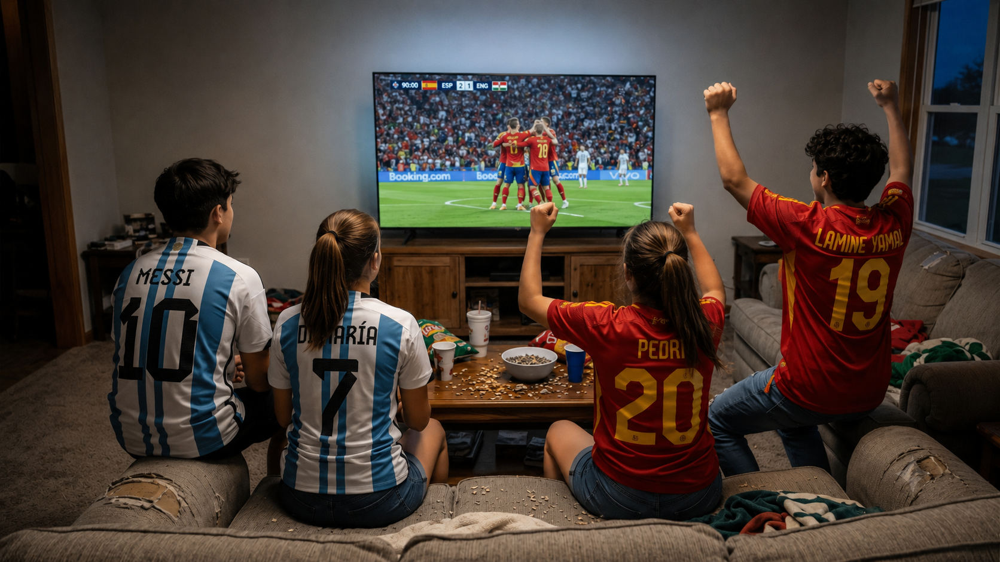

حان الوقت لسؤالين متقدمين
(هذا يعني أننا تقدّمنا في المستوى)
في نهاية العام الدراسي، سجل 400 طالب من الصف التاسع في مدرسة "آفاق" للتخصصات في الصف العاشر.
توزيع التسجيل في يظهر المخطط الدائري.
أ. كم طالبًا سجلوا لتخصص الحاسوب؟
حلّوا بواسطة جدول التناسب.
وجدنا أن 140 طالبًا سجلوا لتخصص الحاسوب.
خلال الصيف أطلق مركّز تخصص البيولوجيا حملة، ونتيجة لذلك غيّر %20 من المسجلين في تخصص الحاسوب اختيارهم إلى تخصص البيولوجيا.
ب. كم طالبًا سيكونون مسجلين في التخصصات التالية بعد الانتقال؟
مونديال!!!
رنين، نسرين، أمجد وأشرف يخططون لمشاهدة النهائي بين الأرجنتين وإسبانيا.
حضّرت رنين خليطًا من المكسرات بوزن إجمالي 600 غرام.
يحتوي الخليط على: %18 جوز، %15 لوز، %45 فول سوداني، والباقي زبيب.
أ. كم غرام من الجوز يوجد في الخليط؟

مونديال!!!
رنين، نسرين، أمجد وأشرف يخططون لمشاهدة النهائي بين الأرجنتين وإسبانيا.
حضّرت رنين خليطًا من المكسرات بوزن إجمالي 600 غرام.
يحتوي الخليط على: %18 جوز، %15 لوز، %45 فول سوداني، والباقي زبيب.
ب. ما هو وزن اللوز والفول السوداني معًا؟
اكتشفنا أن هناك 108 غرام من الجوز و-360 غرام من اللوز والفول السوداني في الخليط.
تبيّنَ أن أمجد لا يحب الزبيب.
قرّرت رنين ألّا تضع الزبيب في الخليط، وأن توزع وزنه بالتساوي بين باقي المكونات.
ت. ما هو وزن كل واحد من بقية المكونات بعد إزالة الزبيب؟